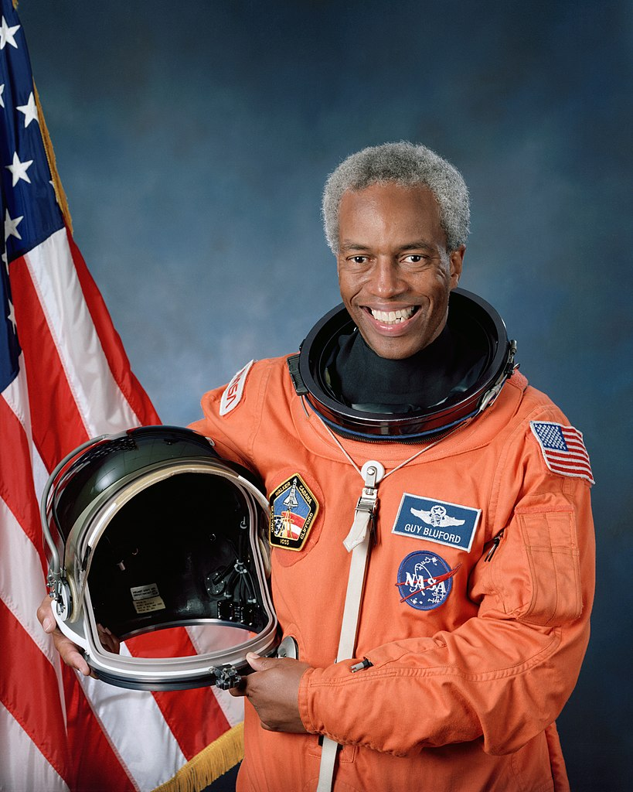
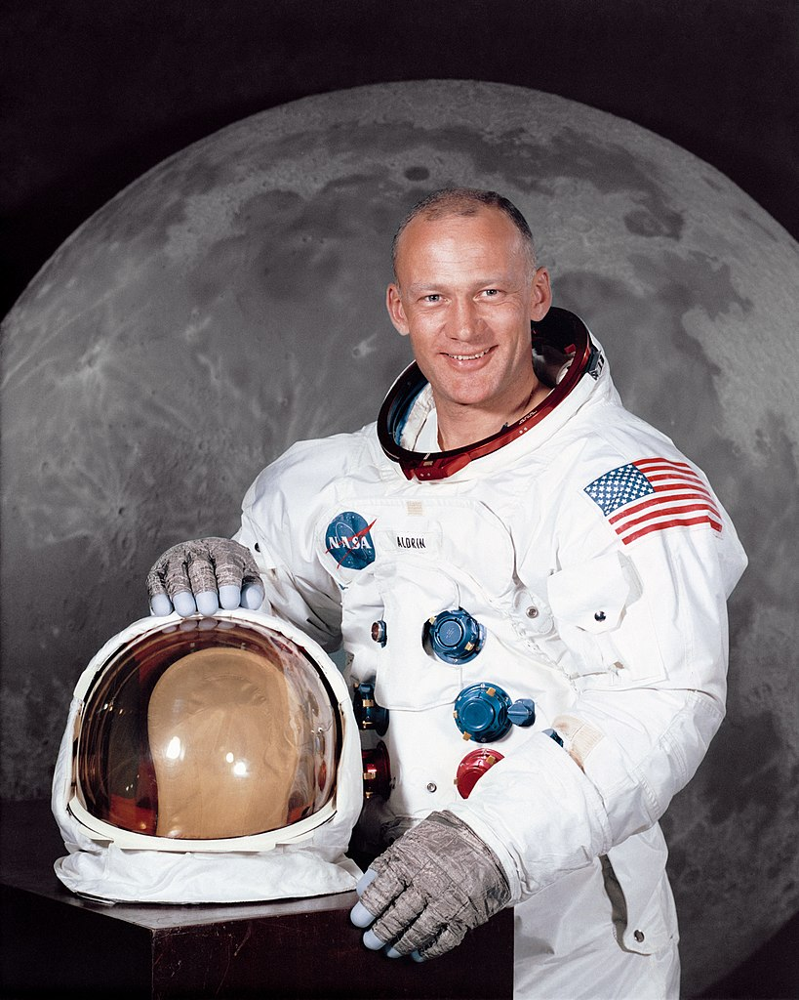
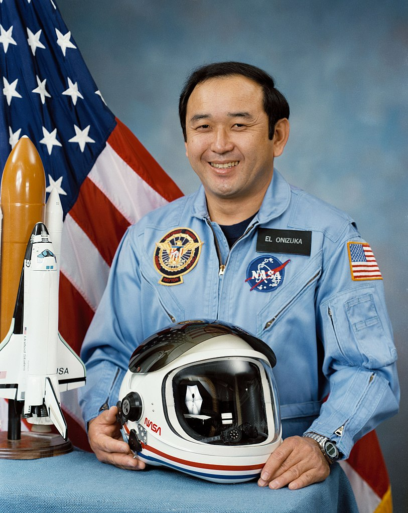

The universe is a mind-boggling expanse of space that contains galaxies, stars, planets, and countless celestial objects. It is estimated to be around 13.8 billion years old and continues to expand. Our understanding of the universe has grown through the study of astronomy and space exploration.
Explore Space